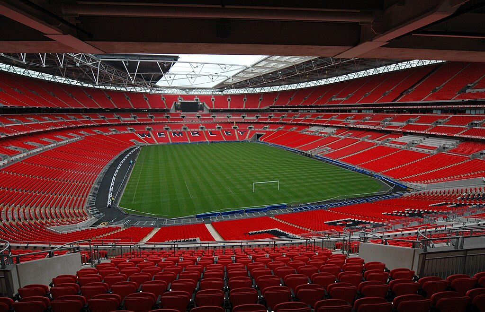
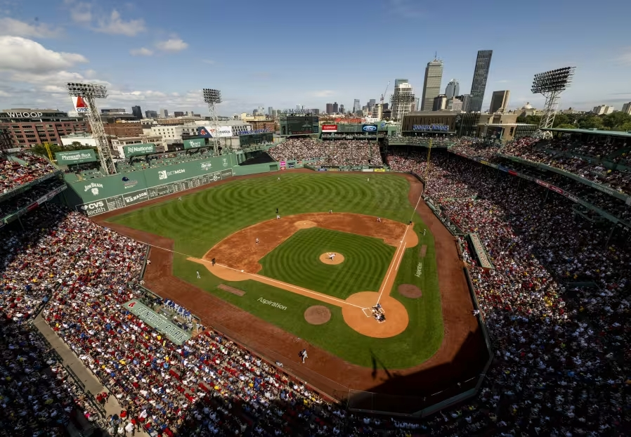

스타디움과 파크의
차이
축구장은 '스타디움', 야구장은 '파크'. 무심코 쓰는 이 이름들에는 스포츠마다의 특징과 역사·문화적 배경이 담겨 있습니다. 스타디움·파크·필드·아레나, 그 미묘한 차이를 알아봅니다.
영어권에서는 축구 경기장을 스타디움(Stadium), 야구 경기장을 파크(Park)라 부르는 경우가 많습니다. 이 차이는 그저 우연이 아니라, 각 스포츠가 가진 특징과 역사에서 비롯된 것입니다.
⚽ 스타디움(Stadium) — 축구·미식축구
스타디움은 잉글랜드 축구의 성지 웸블리 스타디움, 손흥민이 활약한 토트넘 핫스퍼 스타디움, 서울 월드컵 경기장 같은 축구장에서 많이 쓰이고, 미국 NFL의 여러 홈구장도 'OOO 스타디움'이라는 이름을 씁니다.
유래는 고대 로마의 원형 경기장 'stadium'에서 왔다는 설이 많습니다. 주로 축구·미식축구·육상처럼 넓고 정형화된 필드가 필요한 경기장을 뜻하며, 관중석이 경기장을 빙 둘러싸는 닫힌 구조가 특징입니다.

⚾ 파크(Park) — 야구장
야구장에는 '파크'라는 이름이 많습니다. 이름 그대로 공원처럼 여유로운 공간이라는 뜻인데, 미국의 야구장이 초창기부터 공원과 비슷한 공간에 지어졌기 때문이라고 합니다. 그래서 스타디움보다 개방감이 있고, 가족 중심의 여유롭고 휴식 같은 분위기를 지닙니다.
보스턴 레드삭스의 펜웨이 파크(Fenway Park), 잠실야구장(Jamsil Baseball Park), 대구 라이온즈 파크 등이 여기에 속합니다.

필드(Field)와 아레나(Arena)는?
필드(Field)는 경기가 펼쳐지는 공간 그 자체를 강조할 때 씁니다. 건물이나 관중석보다 '경기 공간'에 방점을 둔 이름이죠. KIA 타이거즈의 광주 기아 챔피언스 필드가 대표적입니다.
아레나(Arena)는 고대 로마의 검투 경기장 '아레나'에서 유래했습니다. 라틴어 harena는 경기장 바닥에 깔던 모래를 뜻하죠. 주로 농구 같은 실내 스포츠 경기장에 많이 쓰입니다. NBA LA 레이커스의 홈구장 크립토닷컴 아레나(Crypto.com Arena)가 그 예입니다.
물론 예외도 있지만, 대체로 스타디움·파크·필드·아레나는 이렇게 구분되어 쓰입니다.
- 스타디움은 축구·미식축구용으로, 관중석이 둘러싼 닫힌 구조를 뜻한다.
- 파크는 야구장에 많이 쓰이며, 공원처럼 개방감 있고 여유로운 분위기를 담는다.
- 필드는 경기 공간 자체를, 아레나는 농구 등 실내 경기장을 가리킨다.
생각해보기 ▸ 내가 아는 경기장들의 이름을 떠올려 보세요. 스타디움·파크·필드·아레나 중 무엇이 붙어 있나요? 그 이름은 종목의 특징과 잘 어울리나요?